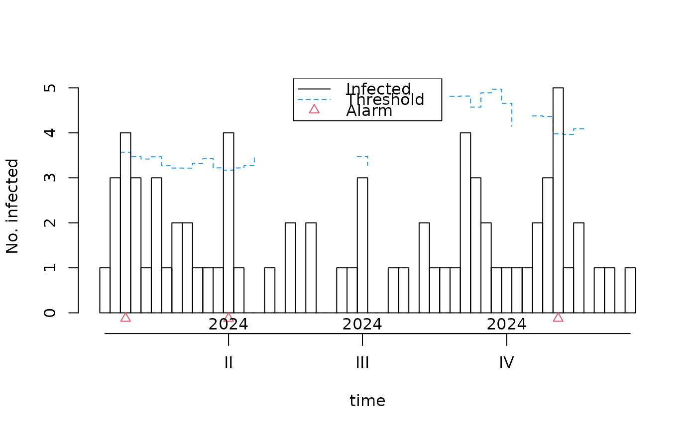
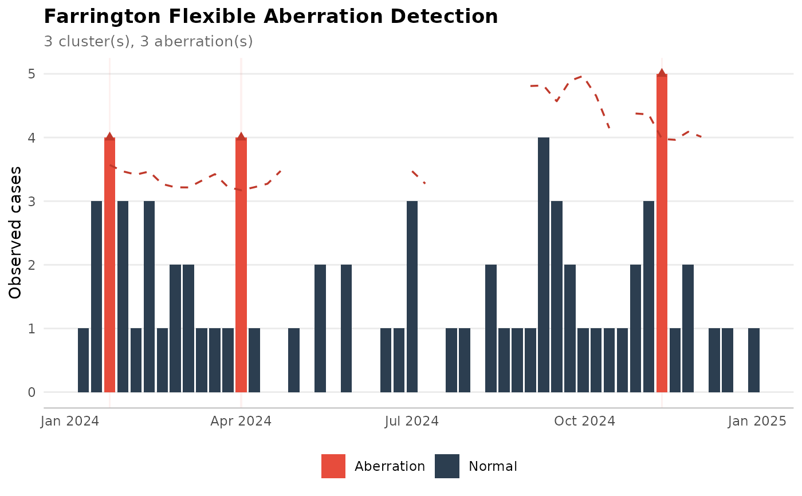
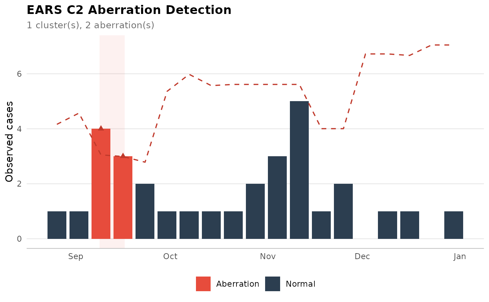
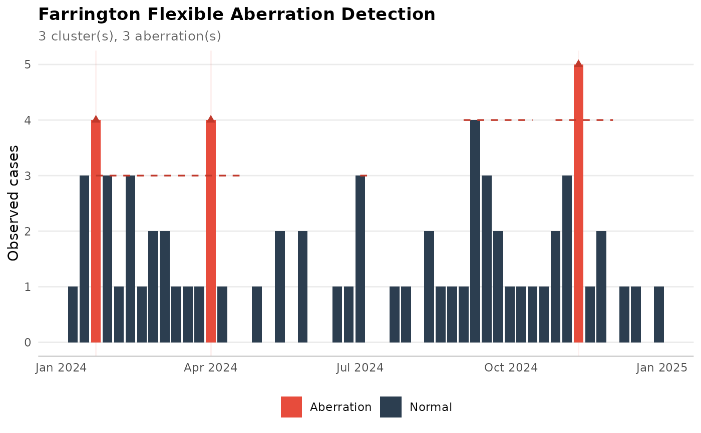

R/detect_farrington.R
detect_farrington.RdDetect aberrations (unexpected increases) in surveillance count data using
the Farrington algorithm (Farrington et al., 1996) or its improved flexible
variant (Noufaily et al., 2012). For time series
without sufficient historic baselines, the EARS methods (C1, C2, C3) are
available as a fallback via the method argument.
detect_farrington(
df,
column_date = NULL,
column_patientid = NULL,
population = NULL,
method = "farrington",
frequency = 52,
years_back = 5,
window_width = 7,
reweight = TRUE,
alpha = NULL,
trend = TRUE,
population_offset = FALSE,
n_periods = 1,
past_periods_ignored = NULL,
threshold_method = "delta",
case_free_days = 14,
minimum_cases = 1,
minimum_duration = 1,
range = NULL,
...
)
n_farrington_clusters(x)
has_farrington_clusters(x, n = 1)
has_ongoing_farrington_cluster(x, dates = Sys.Date() - 1)
has_farrington_cluster_before(x, date)
has_farrington_cluster_after(x, date)
# S3 method for class 'farrington_clusters'
autoplot(object, ...)Data set. This must consist of only positive results. The minimal data set should include a date column and a patient column. Do not summarise on patient IDs; deduplication to unique patient-dates is handled automatically.
Name of the column to use for dates. If left blank, the first date column will be used.
Name of the column to use for patient IDs. If left
blank, the first column resembling "patient|patid" will be used.
A data.frame with columns date and population,
giving the denominator over time, such as patient-days per week for a
hospital ward. Required when population_offset = TRUE. It is supplied
separately from df because periods with zero cases still need a
denominator, so it cannot be derived from the line list. Values are
carried forward to each epoch of the aggregated time series.
Detection method to use. One of:
"farrington" (default): the improved Farrington Flexible method
(Noufaily et al., 2012), suitable when >= 3 years of historic data are
available.
"ears_c1", "ears_c2", "ears_c3": the CDC EARS methods, suitable
as a fallback for short time series without years of baseline data.
Number of observations per year. Use 52 for weekly data
(the default) or 12 for monthly data.
Number of years back in time to include for the baseline
(Farrington only). Defaults to 5 for the flexible method.
Total width of the reference window around the current
period in each reference year (Farrington only). The default of 7 means
3 periods before, the current period, and 3 periods after. Internally
converted to the half-size w = round((window_width - 1) / 2) before
passing to surveillance::farringtonFlexible().
A logical indicating whether to perform the reweighting
step to down-weight past outbreaks (Farrington only). Defaults to TRUE,
which is the Noufaily et al. (2012) recommendation.
Significance level for the one-sided prediction interval.
Defaults to 0.05 for Farrington and 0.001 for EARS C1/C2, 0.025
for EARS C3.
A logical indicating whether to include a time trend in the
GLM (Farrington only). Defaults to TRUE.
A logical indicating whether to include a
population offset in the GLM (Farrington only). Defaults to FALSE. If
TRUE, population must be provided.
Number of reference periods in the factor variable for the
baseline (Farrington Flexible only). Defaults to 1, which corresponds to
the original Farrington et al. (1996) definition. Setting this to e.g. 10
expands the reference window, which can be useful for large regions with
more data.
Number of recent periods to exclude from the
baseline to avoid influence of ongoing outbreaks (Farrington only).
Defaults to NULL, which uses the value of w. Noufaily et al. (2012)
advise 26 for weekly data.
Method to derive the upper bound. One of "delta"
(Farrington et al., 1996, the default), "nbPlugin" (Noufaily et al.,
2012), or "muan" (extended from Noufaily et al., 2012).
Number of case-free days to separate distinct
aberration episodes. Passed to AMR::get_episode(). Defaults to 14.
Minimum number of cases for an aberration episode to be
retained. Defaults to 1.
Minimum number of days (inclusive) for an aberration
episode to be retained. Defaults to 1.
Index of timepoints to monitor. If NULL (the default), the
last frequency timepoints (i.e. the most recent year) are evaluated.
Additional arguments passed to surveillance::farringtonFlexible()
or surveillance::earsC().
output of detect_farrington()
minimum number of clusters, defaults to 1
date(s) to test whether any cluster currently spans this date.
Defaults to yesterday. Returns a logical vector with the same length as
dates.
a single date to test whether there are any clusters before or after this date.
output of detect_farrington()
The data are internally converted from a line list (one row per isolate or
case) to an aggregated sts object from the surveillance package,
which is then passed to surveillance::farringtonFlexible() or
surveillance::earsC().
Use has_farrington_clusters() to return TRUE or FALSE based on the
output, or employ format() to format the result into a summary data frame.
Use autoplot() for a ggplot2 visualisation,
or plot() for the base graphics version.
The Farrington algorithm is the standard method for automated aberration detection in European infectious disease surveillance, used by ECDC, Public Health England, and the Robert Koch Institute (RKI), among others. For each evaluated time point, a quasi-Poisson GLM is fitted to reference counts from the same calendar period in previous years. The predicted count and its overdispersion are used to derive an upper threshold via a variance-stabilising transformation. An aberration is flagged when the observed count exceeds this threshold.
The Early Aberration Reporting System (EARS) methods from the CDC are Shewhart-type control charts that only require counts from the recent past (default: 7 time points). They are useful when insufficient historic data are available for the Farrington approach.
After the surveillance algorithm flags individual time points as aberrations,
consecutive (or near-consecutive) aberrations are grouped into clusters using
AMR::get_episode() with the case_free_days parameter. This produces
operationally useful clusters with start dates, end dates, case counts, and
durations, analogous to detect_disease_clusters().
Farrington CP, Andrews NJ, Beale AD, Catchpole MA (1996). A statistical algorithm for the early detection of outbreaks of infectious disease. J. R. Statist. Soc. A, 159, 547-563.
Noufaily A, Enki DG, Farrington CP, Garthwaite PH, Andrews NJ, Charlett A (2012). An improved algorithm for outbreak detection in multiple surveillance systems. Statistics in Medicine, 32(7), 1206-1222.
Salmon M, Schumacher D, Hohle M (2016). Monitoring count time series in R: Aberration detection in public health surveillance. Journal of Statistical Software, 70(10), 1-35.
# generate example line list data spanning several years
set.seed(123)
cases <- data.frame(
date = sample(seq(as.Date("2018-01-01"),
as.Date("2024-12-31"),
"1 day"),
size = 500,
replace = TRUE),
patient = sample(LETTERS, size = 500, replace = TRUE)
)
# --- Farrington Flexible (default) ---
result <- detect_farrington(cases)
#> Registered S3 method overwritten by 'spatstat.geom':
#> method from
#> print.metric yardstick
#> Using column 'date' for dates
#> Using column 'patient' for patient IDs
result
#> => Detected 3 clusters using Farrington Flexible (3 aberrations across 52
#> evaluated time points) with a total of 13 cases.
#>
#> ── Farrington Flexible Clusters ──
#>
#> These clusters were found:
#> 1. Between 22 and 22 januari 2024: 4 cases (1 aberration(s), 1 days)
#> 2. Between 1 and 1 april 2024: 4 cases (1 aberration(s), 1 days)
#> 3. Between 11 and 11 november 2024: 5 cases (1 aberration(s), 1 days)
#>
#> ── Parameters Used ──
#>
#> • method: farrington
#> • frequency: 52
#> • alpha: 0.05
#> • years_back: 5
#> • window_width: 7
#> • reweight: TRUE
#> • n_periods: 1
#> • threshold_method: delta
#> • case_free_days: 14
#> • minimum_cases: 1
#> • minimum_duration: 1
#>
#> ── Summary ──
#>
#> In total 13 cases between 22 januari and 11 november 2024, spread over 3
#> cluster(s).
#> Use `plot()` or `autoplot()` on these results to visualise them.
has_farrington_clusters(result)
#> [1] TRUE
n_farrington_clusters(result)
#> [1] 3
format(result)
#> # A tibble: 3 × 6
#> cluster first_day last_day cases aberrations duration_days
#> <int> <date> <date> <int> <int> <int>
#> 1 1 2024-01-22 2024-01-22 4 1 1
#> 2 2 2024-04-01 2024-04-01 4 1 1
#> 3 3 2024-11-11 2024-11-11 5 1 1
# check for ongoing cluster
has_ongoing_farrington_cluster(result, Sys.Date() - 1)
#> [1] FALSE
# plot the results
plot(result)

if (require("ggplot2")) autoplot(result)
#> Loading required package: ggplot2
#> Warning: Removed 6 rows containing missing values or values outside the scale range
#> (`geom_line()`).

# --- EARS C2 (short baseline) ---
recent <- cases[cases$date >= as.Date("2024-06-01"), ]
result_ears <- detect_farrington(recent, method = "ears_c2")
#> Using column 'date' for dates
#> Using column 'patient' for patient IDs
result_ears
#> => Detected 1 cluster using EARS C2 (2 aberrations across 19 evaluated time
#> points) with a total of 7 cases.
#>
#> ── EARS C2 Clusters ──
#>
#> These clusters were found:
#> 1. Between 9 and 16 september 2024: 7 cases (2 aberration(s), 8 days)
#>
#> ── Parameters Used ──
#>
#> • method: ears_c2
#> • frequency: 52
#> • alpha:
#> • case_free_days: 14
#> • minimum_cases: 1
#> • minimum_duration: 1
#>
#> ── Summary ──
#>
#> In total 7 cases between 9 and 16 september 2024, spread over 1 cluster(s).
#> Use `plot()` or `autoplot()` on these results to visualise them.
if (require("ggplot2")) autoplot(result_ears)

# --- Farrington with expanded reference window for large regions ---
result_large <- detect_farrington(cases, n_periods = 10,
past_periods_ignored = 26,
threshold_method = "nbPlugin")
#> Using column 'date' for dates
#> Using column 'patient' for patient IDs
result_large
#> => Detected 3 clusters using Farrington Flexible (3 aberrations across 52
#> evaluated time points) with a total of 13 cases.
#>
#> ── Farrington Flexible Clusters ──
#>
#> These clusters were found:
#> 1. Between 22 and 22 januari 2024: 4 cases (1 aberration(s), 1 days)
#> 2. Between 1 and 1 april 2024: 4 cases (1 aberration(s), 1 days)
#> 3. Between 11 and 11 november 2024: 5 cases (1 aberration(s), 1 days)
#>
#> ── Parameters Used ──
#>
#> • method: farrington
#> • frequency: 52
#> • alpha: 0.05
#> • years_back: 5
#> • window_width: 7
#> • reweight: TRUE
#> • n_periods: 10
#> • threshold_method: nbPlugin
#> • case_free_days: 14
#> • minimum_cases: 1
#> • minimum_duration: 1
#>
#> ── Summary ──
#>
#> In total 13 cases between 22 januari and 11 november 2024, spread over 3
#> cluster(s).
#> Use `plot()` or `autoplot()` on these results to visualise them.
if (require("ggplot2")) autoplot(result_large)
#> Warning: Removed 6 rows containing missing values or values outside the scale range
#> (`geom_line()`).
